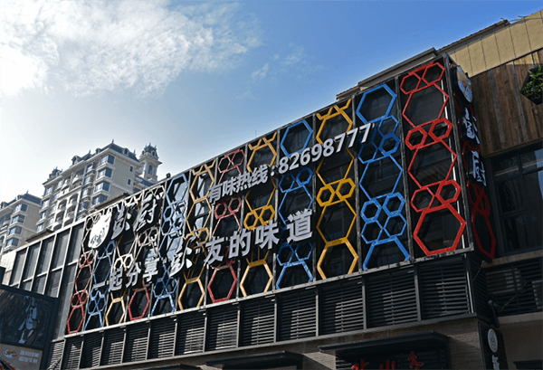

-
企业简介
2010年11月开创第一家彭厨本味馆, 是一家以经营地道本土湖湘湘菜为特 色的餐饮连锁企业。 成长至目前，彭厨拥有直营店13家，已开业的加盟店有26家，怀化、 贵州、深圳、广东、江西、湖北等地都有我们的足迹，我们一直在为每一个老百姓都能认识彭厨而努力、成长着。
-
企业荣誉1、湖南省著名商标
2、2016年人气最旺餐厅
3、团中央青年就业实习基地
4、全国独具影响力的湘菜餐饮业单位
5、湖南省餐饮行业十大品牌企业
6、中国烹饪协会会员单位 -
企业实力
2013年度被评为人气最旺餐厅及全国独具影响力的湘菜餐饮业单位；
2014年“彭厨”被评为湖南省著名商标；
2014年炮哥带着“彭厨”走进了中央电视台，参加了《实战商学院》等节目；
2014年“彭厨”成功挑战吉尼斯纪录，打造了“世界第一锅”；
2014、2015年《中国大厨》对“彭厨”进行了参观与访问；
2014、2015年彭厨接待了《东方美食》等同行的参观与学习；
-


 回顶部
回顶部